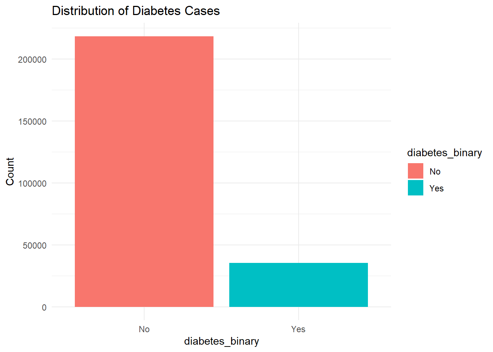
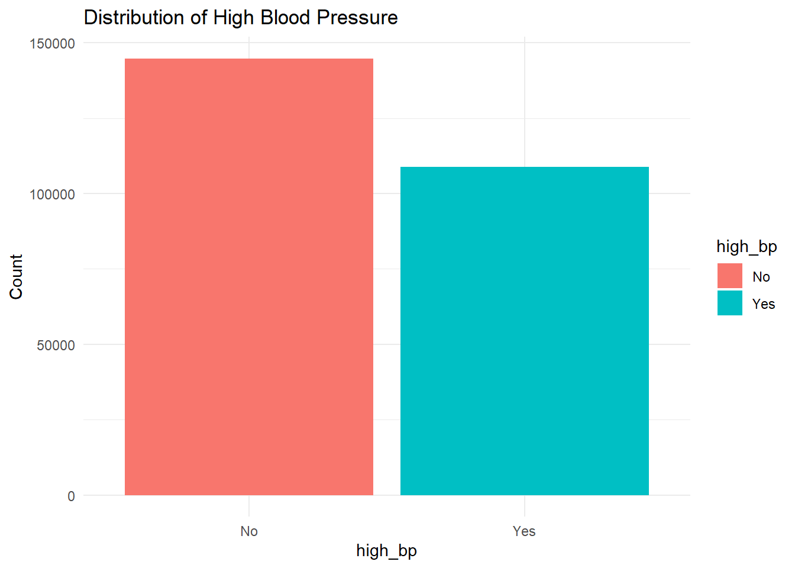
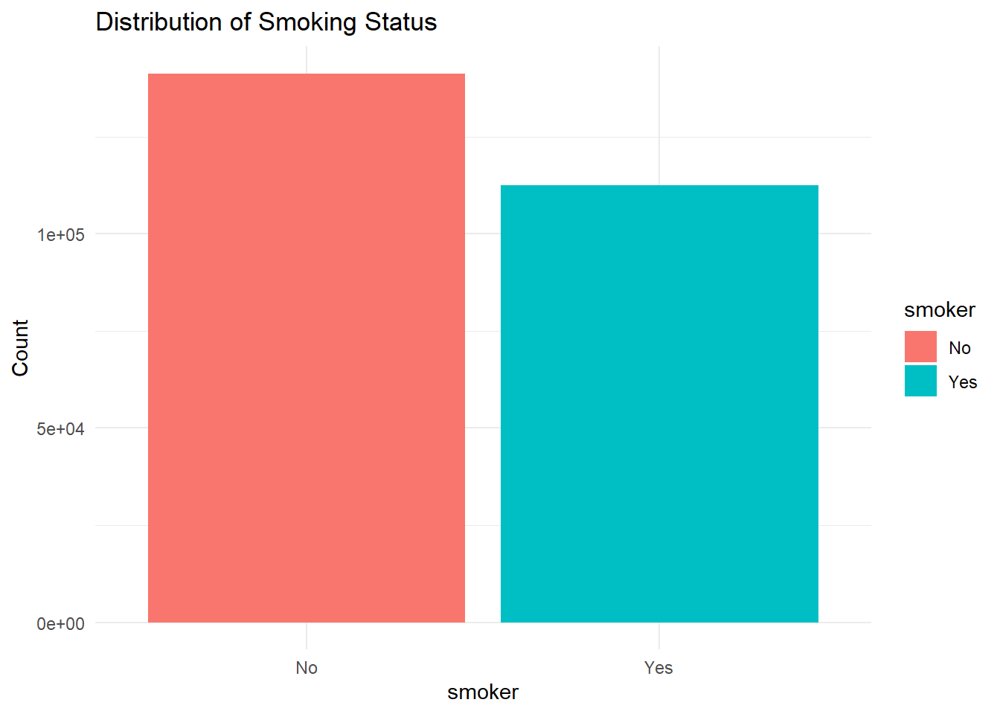
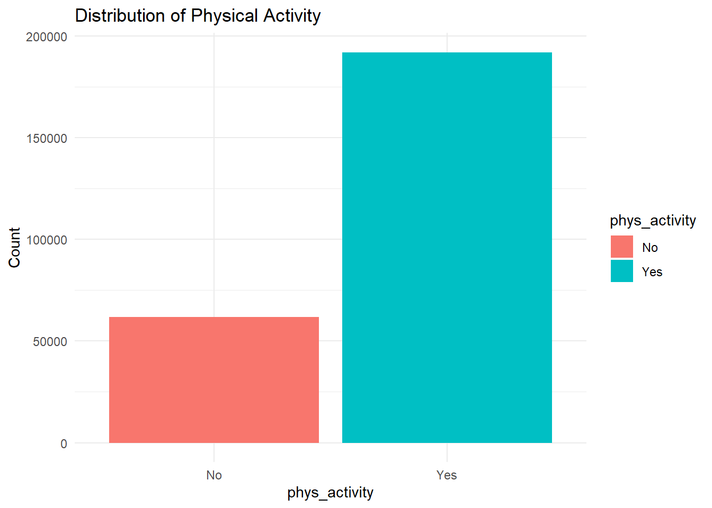
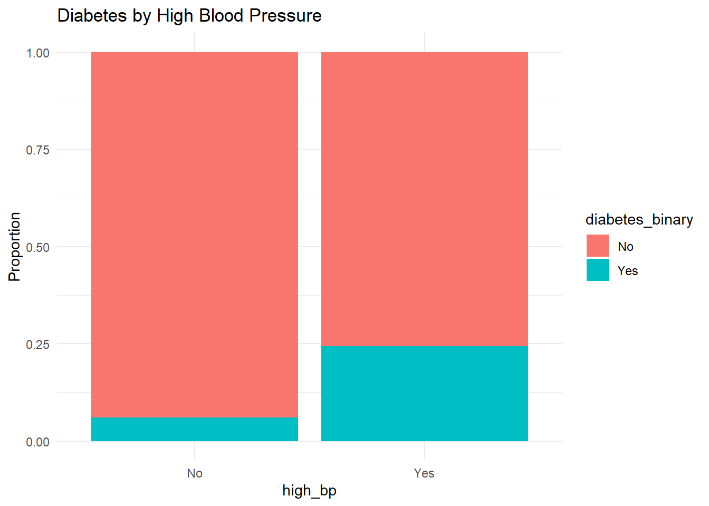
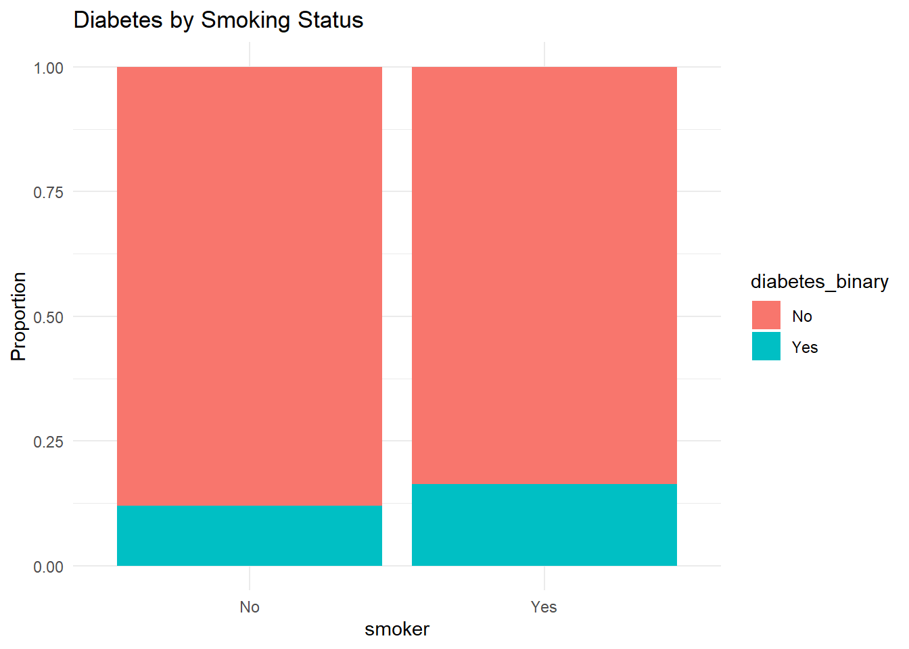
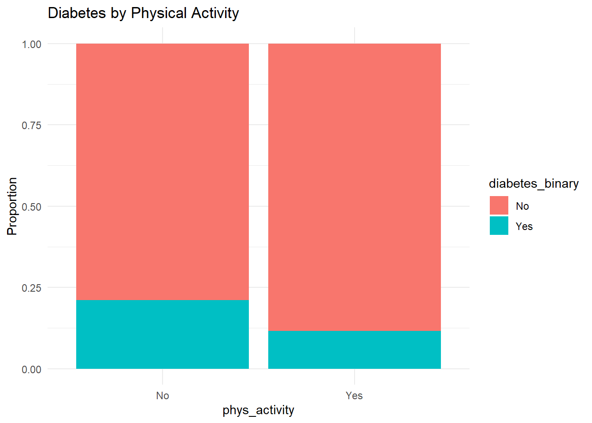

This project uses data from the 2015 Behavioral Risk Factor Surveillance System (BRFSS) to explore potential predictors of diabetes. The binary outcome variable is diabetes_binary, indicating whether a respondent has been diagnosed with diabetes. Our goal is to identify promising predictors that can be used to model the likelihood of diabetes.
We focus our exploratory analysis on the following three predictors:
High Blood Pressure (high_bp): Prior studies have demonstrated a strong correlation between hypertension and diabetes.
Smoking (smoker): Smoking has been associated with increased insulin resistance and risk of type 2 diabetes.
Physical Activity (phys_activity): A lack of physical activity is a known risk factor for obesity and diabetes.
These variables were selected based on both domain knowledge and practicality in terms of lifestyle-related interventions. Note: While this analysis focuses on three predictors, other potential predictors (such as BMI and cholesterol) were considered but not selected for this limited scope.
The skim() output above shows summary statistics for each variable. Most notably, all variables are complete, as anyNA(df) returns FALSE, indicating no missing data.
3. Univariate Exploration
df %>%count(diabetes_binary) %>%ggplot(aes(x = diabetes_binary, y = n, fill = diabetes_binary)) +geom_bar(stat ="identity") +labs(title ="Distribution of Diabetes Cases", y ="Count") +theme_minimal()

df %>%count(high_bp) %>%ggplot(aes(x = high_bp, y = n, fill = high_bp)) +geom_bar(stat ="identity") +labs(title ="Distribution of High Blood Pressure", y ="Count") +theme_minimal()

df %>%count(smoker) %>%ggplot(aes(x = smoker, y = n, fill = smoker)) +geom_bar(stat ="identity") +labs(title ="Distribution of Smoking Status", y ="Count") +theme_minimal()

df %>%count(phys_activity) %>%ggplot(aes(x = phys_activity, y = n, fill = phys_activity)) +geom_bar(stat ="identity") +labs(title ="Distribution of Physical Activity", y ="Count") +theme_minimal()

4. Bivariate Exploration
High Blood Pressure
df %>%count(high_bp, diabetes_binary) %>%ggplot(aes(high_bp, n, fill = diabetes_binary)) +geom_bar(stat ="identity", position ="fill") +labs(y ="Proportion", title ="Diabetes by High Blood Pressure") +theme_minimal()

We observe that individuals with high blood pressure are more likely to have diabetes.
Smoking
df %>%count(smoker, diabetes_binary) %>%ggplot(aes(smoker, n, fill = diabetes_binary)) +geom_bar(stat ="identity", position ="fill") +labs(y ="Proportion", title ="Diabetes by Smoking Status") +theme_minimal()

While the relationship is weaker, smokers appear slightly more likely to have diabetes than non-smokers.
Physical Activity
df %>%count(phys_activity, diabetes_binary) %>%ggplot(aes(phys_activity, n, fill = diabetes_binary)) +geom_bar(stat ="identity", position ="fill") +labs(y ="Proportion", title ="Diabetes by Physical Activity") +theme_minimal()

Engaging in physical activity appears to reduce the likelihood of diabetes.